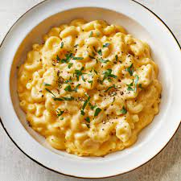

Mac and Cheese

Description
Quick, easy, and tasty macaroni and cheese dish. Fancy, designer mac and cheese often costs forty or fifty dollars to prepare when you have so many exotic and expensive cheeses, but they aren't always the best tasting. This simple recipe is cheap and tasty.
Ingredients
- 1 box elbow macaroni
- 0.25 cup butter
- 0.25 cup all-purpose flour
- 0.5 tea spoon salt
- 2 cups milk
- 2 cups shredded cheddar cheese
Steps
- Bring a large pot of lightly salted water to a boil. Cook elbow macaroni in the boiling water, stirring occasionally until cooked through but firm to the bite, 8 minutes.
- At the same time, melt butter in a saucepan over medium heat. Add flour, salt, and pepper and stir until smooth, about 5 minutes. Pour in milk slowly, while stirring continuously. Continue to cook and stir until mixture is smooth and bubbling, about 5 minutes, making sure the milk doesn't burn.
- Add Cheddar cheese and stir until melted, 2 to 4 minutes.
- Drain macaroni and fold into cheese sauce until coated